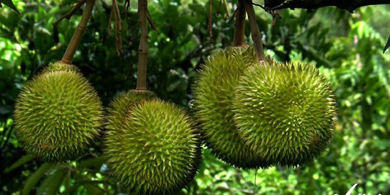
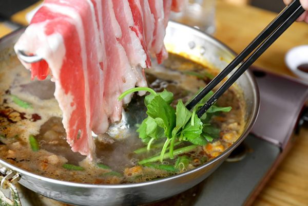
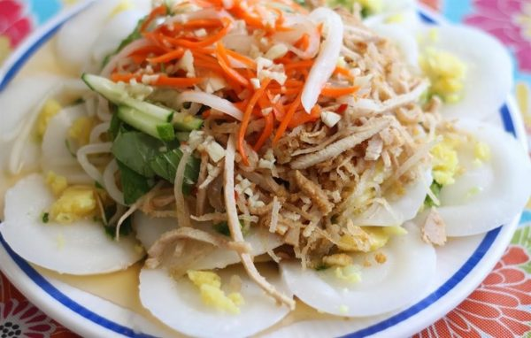

Cuisine
Fruit buffet in Lai Thieu orchard
Located approximately 20 km Northeast from Ho Chi Minh City, Lai Thieu orchard in Thuan An District, Binh Duong Province is a wonderful ecological area for tourists to enjoy and explore Vietnam’s fruits. For the past years, Lai Thieu has been well-known for its diversified tropical [...]
Read more
Beef Hotpot with Shrimp Paste
Today beef hotpot with shrimp paste is considered one of the unique delicious dishes, branded of Binh Duong cuisine. The beef hotpot with shrimp paste is made from the main ingredients of beef and shrimp paste [...]
Read more
Banh Beo Cake
Banh beo cake is a famous specialty of Binh Duong. When coming to Binh Duong and looking forward to discovering Binh Duong food and drink, you definitely have to try the banh xeo [...]
Read more